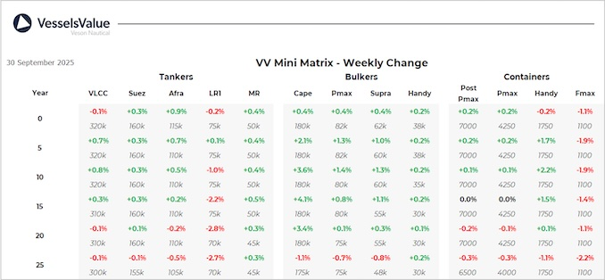

inWeekly Vessel Valuations Report01/10/2025

Bulkers:VV Bulker values have remained relatively stable this week
Capesize BC Wakayama Maru (181,500 DWT, Mar 2013, Koyo Dock) sold SS/DD passed to Asyad Shipping for USD 36.8 mil, VV Value USD 36.17 mil
Panamax BC Nord Taurus (81,700 DWT, Nov 2016, Imabari) sold to Nord Taurus for USD 27.5 mil, VV Value USD 26.47 mil
Ultramax BC Ultra Colonsay (61,500 DWT, Oct 2011, Shin Kasado Dock) sold to Unknown Asian buyers for USD 18.1 mil, VV Value USD 17.48 mil
Handy BC CH Doris & CH Bella (33,100 DWT, 2010, Zhejiang Zhenghe Shipbuilding) sold DD Due in an en bloc deal to undisclosed buyers for USD 16.4 mil, VV Value USD 16.19 mil
Tankers:Market sentiment remains optimistic heading into Q4 amid supply disruptions and peak-season demand as we see S&P activity across many of the tanker sectors last week.
Suezmax Ottoman Nobility (150,000 DWT, Jan 2005, Hyundai Heavy Ind Ulsan Shipyard) sold SS/DD Passed to undisclosed buyers for USD 27 mil, VV Value USD 26.08 mil
LR2 Silverstone (114,000 DWT, Apr 2025, SWS) sold to TransPetrol Maritime for USD 75 mil, VV Value USD 74.4 mil
LR1 Palm (75,000 DWT, Apr 2005, Hyundai Heavy Ind Ulsan Shipyard) sold to undisclosed buyers for USD 12.75 mil, VV Value USD 13.41 mil
MR2 (Chemical/Product) Elandra Corallo (50,600 DWT, Oct 2008, SPP) sold to Ancora Investment for USD 17.5 mil, VV Value USD 16.86 mil
MR1 (Chemical/Product) Jipro Isis (37,900 DWT, May 2008, Shin Kurushima Onishi) sold to Avin International for USD 13.35 mil, VV Value USD 13.75 mil
Containers:Recent sales impacting the second-hand values this week with a change in the 10YO Handy Container and Feedermax vessels
Post Panamax OOCL Brazil and OOCL Durban (8,540 TEU, 2010/2011, Hanjin HI) sold to ONE for USD 155 mil en bloc, VV Value USD 155.6 mil
Handy Container Nordpanther (1,730 TEU, Dec 2014, Zhejiang Ouhua) sold to CMA CGM for USD 27.5 mil, VV Value USD 25.9 mil.
Feedermax Contship Oak (1,100 TEU, Nov 2007, Taizhou Kouan Shipbuilding) sold to MSC for USD 11.5 mil, VV Value USD 11.6 mil
